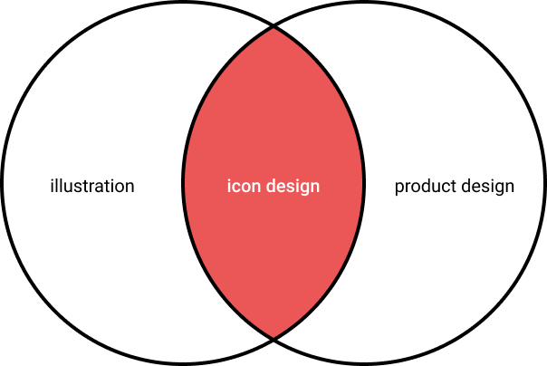
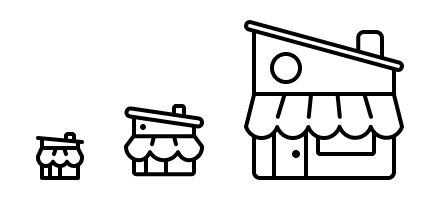

Creating pixel perfect icons in Figma
12 Feb 2022 Express, HandlebarsIcons are a crucial part of any design system or product experience. Icons help us quickly navigate. They are language-independent. And best of all: they're real tiny, so they don't take up very much real estate. Icons are a fundamental part of a good design system and are very helpful for marketing materials. They’re the foundational building block of illustrated content, but they are also highly technical.
There aren't many people who love to design icons, and even fewer who are great at it. I wrote this guide to help you become one of those people.
Whether you are a design systems expert, an illustrator, or a product designer, this guide will help you learn how to build icons, how to align them with your brand, and how to implement them into your design system. Let's start with the basics.
Basic elements of an icon
Size
Consistency is key with icons, and all your icons should be the same size when you build them. First, you'll need to make sure that you know how your grid is built (multiple of 8 or 10?). From there, your base icon size should relate directly to that. So, if you have a grid based on 8s, you'd want to build at 16, 24, or 32.
Choose a common size to build all your icons to, and then allow your engineers to scale to other sizes that might be needed by other designers. You don't want to build the same icon over and over at a multitude of sizes.
When you need glyph complexity, that's when you want to start adding sizes. You might have your base product icon at 24px, but marketing icons at 80px because of the vast difference in use. You'll want to add detail for those larger sizes.
When building the same icon at different sizes, I like to start with the largest size and go down. I find it much easier to remove details and simplify, rather than adding as I go up. It also gives you a sense of the object before you truly minimize it.